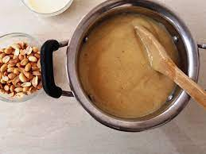

Fermented Corn Dough Porridge

Fermented corn dough porridge, locally known as Mmore Koko is a traditional Ghanaian dish that is both delicious and nutritious. It is a good source of carbohydrates, protein, and fiber. The fermentation process also helps to break down the starch in the cornmeal, making it easier to digest.
Mmore Koko can be served plain or with a variety of toppings, such as sugar, honey, milk, or fruit.
Here is everything you will need to make Mmore Koko:
- 1 cup corn dough
- 1 small ginger
- 4 dried chili peppers
- 4 bell peppers
- Salt
Now that you've sorted the ingredients out let's get to making some spicy corn dough porridge
- Grind the chili and ginger, add 1/4 water and pass the mixture trough a fine sieve. Use an earthen ware or motor and pestle to grind if possible.
- Add 1 1/2 cups of water to the corn dough, mix properly and pass it through a fine sieve.Pour sieved dough into a pot. Sieve it twice if you're using a normal sieve.
- Lightly crush the bell peppers and add to the dough mixture. Add the sieved ginger and chili. Add a pinch of salt and bring mixture to a boil.
- Stir continuously in a circular manner until it thickens up then add 1 cup of water. Stir and allow to cook until it thickens up again. If porridge is too thick, add a small amount water to thin it.
- Remove the peppers and serve with sugar and milk (optional) and bread or anything really.